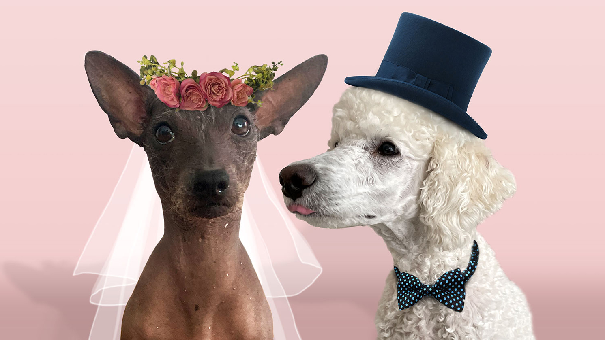
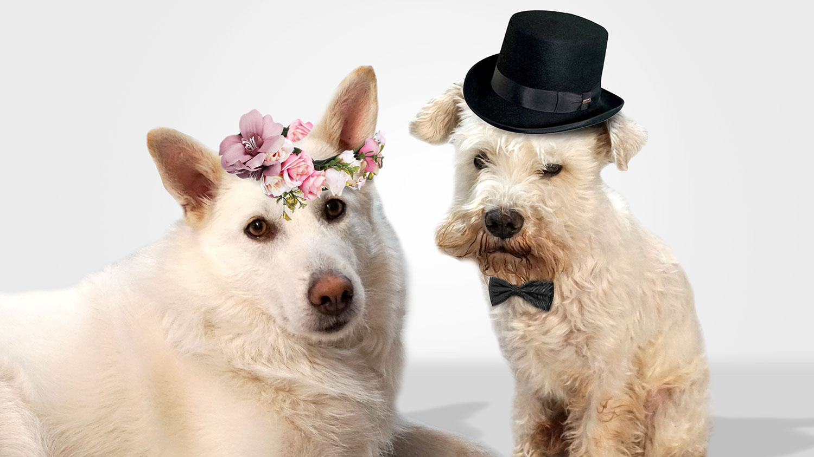

Meidän tarina
Tarinamme alkoi kesällä 2020, jolloin meidän molempien vanhemmat veivät meidät Seurasaareen ulkoilulle. Tietämättömänä toistemme olemassa olosta, nautimme raikkaasta kesäilmasta ja nuuhkutimme menemään pitkin Seurasaaren rantaviivoja. Liikkeellä oli paljon muitakin karvaturreja paimenkoirista noutajiin, mutta Carmen hienona neitinä ei kiinnittänyt heihin huomiota. Carmen ei voinut kuitenkaan olla huomaamatta kaukaa lähestyvään hehkuvan valkeaa Hugoa, kenen karvoista auringonsäteet hohkuivat häikäisevästi. Carmen tiesi sillä hetkellä, että hän on se oikea. Hugo nuorena ja vilkkaana poikana säntäili puolelta toiselle nuuhkien jokaisen kiven ja kannon, mutta jähmettyi kuin kivi nähdessään Carmenin muutaman kymmenen metrin päässä. Hetken toistemme tuijottamisen jälkeen tiesimme mitä oli tehtävä.
💗 💗 💗
Ennen kuin vanhempamme ehtivät kissaa sanoa, lähdimme molemmat vetämään armotta hihnat kireinä toisiamme kohti, eikä aikaakaan, kun olimme kuonokkain. Hiukan ujon nuuhkuttelun jälkeen kierimmekin jo toistemme päällä. Vanhempamme huomasi välillämme olevan yhteyden ja antoi meidän temmeltää yhdessä useita minuutteja, mutta silti aikamme yhdessä tuntui aivan liian lyhyeltä. Vanhempiemme vetäessä meitä eroon toisistamme, koitimme paniikissa vaihtaa osoitteita, mutta Carmen ei saanut selvää Hugon haukkumisesta, sillä paikalle oli tullut muita räyhääjiä.
Carmen oli allapäin, sillä Hugon kanssa tapaamisesta oli kulunut jo useampi päivä ja toivo jälleennäkemisestä alkoi hiipua. Carmenin ollessa takapihalla makoilemassa, hän kuuli tutun haukahduksen kaukaisuudessa, se oli Hugo. Epäröimättä Carmen alkoi haukkua takaisin ja Hugon ääni läheni jokaisen haukahduksen jälkeen. Hetken päästä Hugo olikin jo heidän erottavan aidan toisella puolella, ja yhteisvoimin aloimme kaivamaan aidan ali kulkevaa koloa toistemme luokse.
Kolo oli vihdoin tarpeeksi suuri, jotta Carmen pääsi aidan toiselle puolelle, missä Hugo odotti iso puruluu suunpielessä. Hugo oli tuonut Carmenille lahjaksi hänen pitkään säilytetyn puruluun. Hugo kertoi, että oli säilyttänyt kyseistä luuta erityistä hetkeä varten, ja oli varma siitä, että Carmen oli erityinen. Yhdessä lähdimme pienelle ulkoilulle, jonka aikana jaoimme herkullista puruluuta samalla, kun vaihdoimme kuulumisia ja tutustuimme lisää. Salaisia treffejämme jatkui pitkän aikaa. Teimme retkiä metsissä ja katselimme yhdessä auringonlaskuja läheisellä pellollamme.
Eräänä iltana Hugon tullessa taas Carmenin luokse, hän sanoi tämän illan olevan erityinen, ja että illan ohjelma olisi Hugon itse keksittyä. Carmen ei tiennyt miten tähän suhtautuisi, mutta luotti Hugoon ja lähti hänen kanssaan tassut heiluen matkaan. Carmen ei kauniissa kesämaisemissa edes huomannut mihin Hugo oli hänet johdattanut, heidän tapaamispaikkaansa, Seurasaareen. Hugo oli jäänyt hiukan jälkeen ja kun Carmen kääntyi, Hugo oli tassuillaan ja kysyi: Carmen tuletko vaimokseni.
Tässä on parhaat ystävämme ja uskolliset toverimme,
Carmenin kaaso Sansa & Hugon bestman Milo 💕